Notación Modelo Entidad RelaciónNotación Modelo Entidad Relación
Introducción
En general, el objetivo del diseño de una base de datos relacional es generar un conjunto de esquemas de relaciones (tablas / archivos) que permitan almacenar la información con un mínimo de redundancia, pero que a la vez faciliten la recuperación de la información. Una de las técnicas para lograrlo consiste en diseñar esquemas que tengan una forma normal adecuada. Para determinar si un esquema de relaciones tiene una de las formas normales se requiere mayor información sobre la empresa del "mundo real" que se intenta modelar con la base de datos. La información adicional la proporciona una serie de limitantes que se denominan dependencias de los datos.
Problemas en el diseño de bases de datos relacionales
Antes, de hablar de formas normales y dependencias de datos es conveniente considerar los defectos que pueden tener una base de datos mal diseñada. Supongamos las siguientes relaciones:
PERSONA (DNI, NOMBRE, APELLIDOS)
COCHE (MATRICULA, MARCA. TIPO, POTENCIA, COLOR)
TENER (DNI, MATRICULA, FECHA, PRECIO)
Algunos criterios para identificar entidades son los siguientes:Si en lugar de las anteriores relaciones que componen la BD, optásemos por una única relación, formada por los atributos de las tres, ésta tendría los siguientes defectos:
- En primer lugar, algunos datos serán redundantes; en general en esta relación una persona aparecerá tantas veces como coches posea.
- Esta redundancia conlleva unos riesgos de incoherencia durante las actualizaciones: por ejemplo, si resulta que el nombre de López no es Pedro sino Juan, hay que tener cuidado y actualizar todas las tuplas (renglones) en las que aparece López.
- Es preciso admitir la presencia de valores nulos en una relación de este tipo para poder mantener en la base, coches sin propietarios o personas que no tienen coches. Si muchos de los atributos no se aplican a todas las tuplas de la relación, acabaremos con un gran número de nulos en esas tuplas. Esto puede originar un considerable desperdicio de espacio de almacenamiento Ejemplo: Si sólo el 10% de los empleados tiene oficinas individuales, no se justificará incluir un atributo NUM_OFIC en la relación EMPLEADO; más bien, podríamos crear una relación OFICINAS_EMPL (DNIEMP, NUM_OFIC) contenga exclusivamente tuplas para los empleados con oficinas individuales).
Por lo tanto además de hacerse más complicada la actualización (inserción, eliminación y modificación), se desperdicia espacio. Uno de los objetivos en el diseño de esquemas es minimizar el espacio de almacenamiento que ocupan las relaciones base (archivos). La agrupación de atributos en esquemas de relación tiene un efecto significativo sobre el espacio de almacenamiento, se requiere más.
Los diseñadores entrevistan a los futuros usuarios de la base de datos para recoger y documentar sus necesidades de información.
Una vez recogidos todos los requerimientos, el siguiente paso es crear un esquema conceptual para la base de datos mediante un modelo de datos conceptual de alto nivel. El esquema conceptual contiene una descripción detallada de los requerimientos de información de los usuarios, y contiene descripciones de los tipos de datos, relaciones entre ellos y restricciones. Nosotros utilizaremos para el diseño de esquemas conceptuales el modelo E-R (entidad relación), que describe los datos como entidades, vínculos (relaciones) y atributos.
El siguiente paso en el proceso de diseño consiste en implementar de hecho la base de datos con un S.G.B.D. comercial, transformando el modelo conceptual al modelo de datos empleados por el S.G.B.D. (jerárquico, red o relacional).
En nuestro módulo haremos la implementación con un S.G.B.D. relacional, por ser el modelo más utilizado por las empresas en la actualidad.
En este paso se especifican las estructuras de almacenamiento internas y la organización de los archivos de la base de datos.
El modelo entidad - relación fue propuesto por el Dr. Peter Chen en 1976. A pesar de que no puede considerarse como muy formal en el sentido matemático, es un modelo que la intuición acepta bastante bien, además de contar con una representación gráfica que facilita una visión global de lo que se modela.
A partir de la notación de diagramas planteada por Chen, se han derivado una serie de variantes, si bien los conceptos centrales son en esencia los mismos. La mayor parte de las herramientas CASE (Computer Aided System Engineering) utilizan alguna de estas variantes para apoyar el modelado y diseño de bases de datos.
En este curso utilizaremos una notación bastante apegada a la que el propio Chen utilizó en la herramienta CASE denominada ER-Modeler, que en comparación a la publicación original, introduce algunos elementos adicionales de modelado que permiten tratar con algunos casos especiales de manera bastante natural.
A continuación se presentan los conceptos fundamentales notación con los conceptos asociados.
Las entidades son el objeto básico que se representa en el modelo E-R, el cual "puede ser cualquier objeto del mundo real con existencia propia sobre el cual queremos tener información en una base de datos". Estos corresponden a un conjunto de sujetos de interés en el modelo. Su representación gráfica es un rectángulo, con el nombre del conjunto de sujetos al que se refiere, que por convenio utilizaremos en plural.
Algunos criterios para identificar entidades son los siguientes:
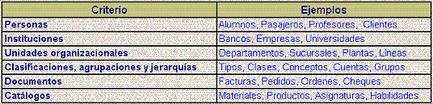
Representan la interrelación entre las entidades del modelo, estableciendo una acción, un hecho o una relación de pertenencia entre dos (o más) entidades. Cada asociación se representa con un rombo, con el nombre dentro de él y líneas conectándolo a las entidades participantes.
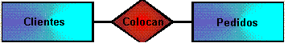Algunos ejemplos de asociaciones:
- Clientes colocan Pedidos
- Proveedores suministran Materiales
- Pedidos contienen Partidas
- Bancos emiten Cheques
- Alumnos forman Grupo
Debemos buscar nombres significativos para las asociaciones, que en general serán verbos indicando acciones entre las entidades involucradas. Sin embargo, muchas asociaciones establecen únicamente una relación de pertenencia y resulta difícil encontrar nombres diferentes para tales asociaciones. Para evitar este problema, tomaremos el convenio de no denominar a las relaciones de pertenencia utilizando simplemente un rombo sin etiqueta.
No existe restricción alguna en el modelo al respecto de que exista más de una asociación entre una pareja de entidades, y por tanto esto es perfectamente permisible siempre y cuando represente un hecho de la realidad que se modela. Como ejemplo de una pareja de entidades con más de una asociación tenemos el siguiente: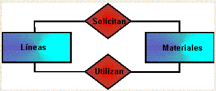En este caso la asociación solicitan se refiere al hecho en que la línea de producción solicita la adquisición de un material y por otra parte, la asociación utilizan se refiere al hecho de que el material es utilizado en la línea de producción, dos hechos distintos entre una misma pareja de entidades.
Una relación puede tener atributos descriptivos. Por ejemplo, la siguiente relación, podría tener como atributo descriptivo fecha_venta (la fecha en que se hace la venta).
* Tanto Relationship como Relation se traducen al español como Relación, sin embargo el primer término se refiere en la literatura de bases de datos al concepto de P. Chen, mientras que el segundo se refiere al objeto principal del modelo relacional de E.F. Codd que analizaremos más adelante. Para evitar la ambivalencia, utilizaremos el término Asociación para Relationship.
Grado de una relación es el número de entidades que participan en la relación. Se puede restringir el modelo E‑R para incluir solo conjuntos de relaciones binarias, es decir de grado 2 (es aconsejable).
La cardinalidad de una asociación es el número de elementos de las entidades participantes que se relacionan entre sí, a través de la asociación en cuestión. Los tres casos de mayor interés son 1:1 (uno a uno), 1:N (uno a muchos) y N:N (Muchos a muchos), si bien pueden establecerse explícitamente los valores de N, sobre todo en los casos en que sea restrictivo. En el diagrama la cardinalidad se indica sobre la línea que une cada entidad con la asociación:
Esto debe leerse en dos sentidos: 1 cliente coloca N pedidos y un pedido es colocado por 1 (y sólo 1) cliente.
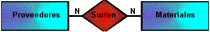En este caso, 1 proveedor surte N materiales pero al mismo tiempo 1 material puede ser surtido por N proveedores. Según su cardinalidad, podemos clasificar las relaciones en los siguientes tipos:
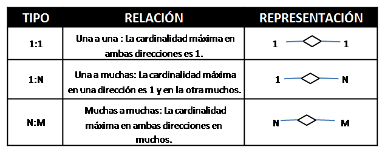
Opcional (parcial): No todas las ocurrencias de una entidad tienen que estar relacionadas con alguna de la otra entidad. Se representa mediante una línea con trazo sencillo. (Por ejemplo, no toda persona posee animales, y no todo animal es posesión de alguna persona. En este caso ambas entidades participan parcialmente en la relación).
Obligatoria (total): Todas las ocurrencias de una entidad deben estar relacionadas con alguna de la entidad con la que está relacionada. Se dice también, que existe una participación total de ese conjunto de entidades en el conjunto de relaciones, y se representa mediante una línea con trazo doble. (Por ejemplo, todo proveedor tiene que vender algún artículo para serlo, y todo artículo es vendido por algún proveedor. En este caso ambas entidades participan de forma total en la relación).
Los atributos son características, propiedades o valores de las entidades y/o asociaciones que las describen en detalle. En la notación original de Chen, los atributos se representan con elipses. Para evitar sobrecargar los diagramas, utilizaremos únicamente los nombres de los atributos bajo la entidad o asociación correspondiente:
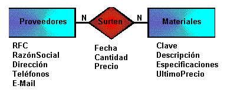Al conjunto de valores que puede tomar un atributo se le llama dominio del atributo. Los atributos pueden ser clasificados como simples o compuestos, mono valuados o multivaluado, y almacenados o derivados , a continuación se describen cada uno de ellos:
a) Simples o compuestos: Los compuestos están formados por un conjunto de atributos, mientras que los simples no se pueden dividir.
b) Mono valuados o multivaluados: Los mono valuados sólo pueden tener un valor para una entidad particular, mientras que los multivaluados pueden tener más de un valor. Los multivaluados se representan mediante una elipse con trazado doble. (Por ejemplo el atributo color de la entidad COCHE es un atributo multivaluado, pues un coche puede estar pintado de varios colores).
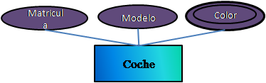c) Almacenados o derivados: Los derivados son atributos cuyo valor para una entidad particular puede obtenerse en función de los valores almacenados en otros atributos. Se representan mediante una elipse con trazo discontinuo. (Por ejemplo el atributo edad de la entidad PERSONA es un atributo derivado porque se puede obtener en función del valor dela tributo fecha_nacimiento).
En 1979, Tardieu, propone tres reglas generales que debe cumplir una entidad:
• Tiene que tener existencia propia.
• Cada ocurrencia de un tipo de entidad debe poder distinguirse de las demás.
• Todas las ocurrencias de un tipo de entidad deben tener las mismas propiedades (atributos).
El identificador es un conjunto formado por uno o más atributos que identifican de manera única a uno de los elementos del conjunto representado en una entidad. Ejemplos: el rfc de un cliente, el número de un pedido, la matrícula de un alumno. En la notación Original de Chen, el identificador se indica con una elipse doble; para evitar sobrecargar el diagrama, subrayaremos el conjunto de atributos que funcionen como identificador de la entidad.
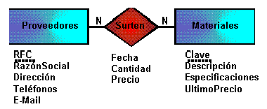
- Identificar entidades, recuerda que por lo general son sustantivos o agrupaciones.
- Incorporar atributos a las entidades
- Determinar identificadores (valores únicos)
- Identificar asociaciones entre entidades, que por lo general son verbos
- Determinar la cardinalidad de las asociaciones
- Incorporar atributos a las asociaciones, los atributos en las asociaciones se presentan en cardinalidades N:N
- Verificar con los requerimientos y refinar el modelo en caso necesario
El modelo E-R extendido pretende aportar soluciones a requerimientos un tanto más complejos no contemplados en el modelo E-R propuesto por Codd. Así se incorporan al modelo E-R dos nuevos elementos:
Además de entidades, asociaciones y atributos, se definen símbolos adicionales para algunos conceptos que facilitan la conceptualización y lectura de los modelos.
Los roles se utilizan cuando una entidad juega más de un rol en una asociación, ya sea consigo misma (relaciones recursivas), o bien cuando dos (o más) entidades presentan múltiples asociaciones entre ellas. Estos son los casos:
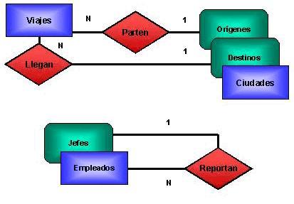En el primer caso, la entidad Ciudades juega dos roles: el de Orígenes y el de Destinos, cada uno de los cuales se asocia con el viaje a través de las asociaciones Parten y Llegan. En el segundo caso, en la entidad Empleados están incluidos los Jefes, y la mayoría de los empleados le reportan a algún jefe.
En algunas ocasiones encontramos conjuntos de entidades para los que para todos los elementos existen determinados atributos o asociaciones, mientras que para algunos subconjuntos existen asociaciones o atributos exclusivos para el subconjunto. En este caso es útil establecer una entidad generalizadora (SuperClase) y una o varias entidades especializadoras(SubClase):
Una superclase es todo tipo entidad sobre el que se definen subclases. Como se trata de entidades, se representa al igual que ellas con un rectángulo.
Una subclase es un subconjunto del tipo entidad que tiene sentido en el mini mundo ya que tiene atributos particulares. Como se trata de entidades, se representa al igual que ellas con un rectángulo.
Modelado de superclases y subclases
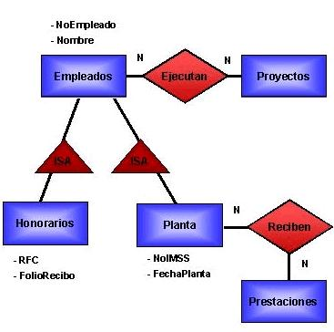En este caso, la entidad Empleados es la generalizadora, las entidades Honorarios y Planta son las especializadas. Cualquier empleado, de planta u honorarios puede ser asignado para realizar Proyectos. Los atributos RFC y FolioRecibo no se definen para todos los empleados, únicamente para los de honorarios; los atributos NoIMSS y FechaPlanta sólo se definen para los empleados de planta quienes además son los únicos que Reciben Prestaciones.
Las relaciones ISA (del inglés es a, o "es un") son implícitamente de cardinalidad 1:1 por lo que no se indica explícitamente.
El tipo relación entre una superclase y sus subclases, se dice que es un tipo ES_UN (IS_A). Este tipo relación se representa a diferencia del resto de relaciones con un triángulo. El tipo ES_UN puede ser disjunto (disjunct) o solapado (overlap), es decir, que las entidades pertenecientes a las subclases pueden ser conjuntos disjuntos (es decir, una entidad no puede estar en dos subclases distintas) o conjuntos solapados (es decir, una entidad puede estar en dos o más superclases distintas). Cuando es tipo ES_UN es disjunto se denota con una d dentro del triángulo, por el contrario si es solapado se denota con una o dentro del triángulo.El proceso para determinar la necesidad de usar estos elementos puede producirse en dos sentidos:
- Especialización: es el proceso de definir un conjunto de subclases a partir de un tipo entidad.
- Generalización: es el proceso de suprimir las diferencias entre varios tipo entidad, identificando sus cualidades comunes.
El uso de este elemento está justificado (y recomendado) en dos casos:
- Cuando las subclases tienen atributos particulares que no tiene la superclase.
- Cuando existen tipos relación en los que participan solo algunas subclases.
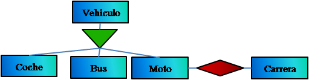
a) Fuertes (o regulares), son aquellas que tienen existencia por si mismas (Por ejemplo, EMPLEADO). Las entidades fuertes se representan como se ha dicho con un rectángulo con trazo simple.
b) Débiles, cuya existencia depende de otro tipo de entidad (Por ejemplo, FAMILIAR depende de EMPLEADO. La desaparición de un empleado de la base de datos hace que desaparezcan también todos los familiares del mismo). Estos tipos de entidades se representan normalmente con un rectángulo con líneas de doble trazo. Estas entidades normalmente no tienen suficientes atributos para formar una clave primaria.
Las entidades fuertes y débiles son aquellas que para identificarse plenamente requieren un contexto que puede expresarse como una asociación con otra entidad. Un caso típico es el que se muestra en el siguiente modelo:
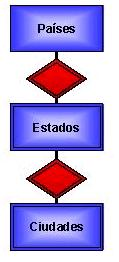En este ejemplo, dado que el nombre de una ciudad puede repetirse en diferentes estados y aún el nombre de los estados puede repetirse entre diferentes países, decimos que estado es una entidad débil de países y que ciudad es una entidad débil de estado para indicar que existe una dependencia de identificación entre los conjuntos de entidades, lo cual denotamos con la línea doble en la entidad y la asociación. Se asume que la cárdinalidad es siempre 1:N, con N del lado de la entidad débil, por lo que no se indica explícitamente.
Cuando utilizamos el modelo entidad-relación para abstraer una situación, existen algunos detalles sobre la información que no se exhiben en nuestro modelo, pero resulta importante contemplar. A estos detalles les denominamos reglas de integridad adicionales.
El modelo entidad-relación establece reglas de integridad implícitas; por ejemplo, cuando tenemos el modelo que se muestra a continuación:
La asociación surten está formada por todas las parejas válidas de un proveedor con un material, donde la noción de validez se refiere a que una pareja aparece en surten solo si efectivamente el proveedor indicado surte el material indicado.
Los dos ejemplos anteriores constituyen reglas de integridad implícitas en el modelo entidad-relación. A continuación discutiremos cuales son las reglas de integridad adicionales.
El primer caso de reglas de integridad adicionales es lo que llamamos cotas de la cardinalidad, en las cuales se exhibe una cardinalidad mínima y una máxima, en la forma que se ejemplifica:
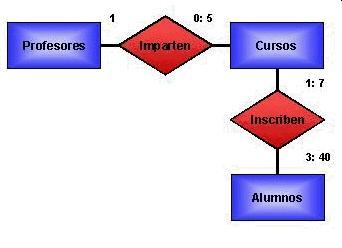Aquí la asociación Imparten tiene una cardinalidad acotada 0: 5 que significa que un profesor puede impartir desde cero (cuando un semestre se dedica a la investigación o algún posgrado) hasta cinco cursos (que representa la carga máxima para un profesor de tiempo completo). En el caso de la asociación Inscriben, la información que nos brindan las cardinalidades acotadas se interpretan como:
Un alumno debe inscribirse al menos a uno y cuando más a siete cursos.
En un curso deben inscribirse cuando menos tres y a lo más cuarenta alumnos
Además de las cotas de cardinalidad (que son de hecho una ampliación a la notación de la cardinalidad que habíamos manejado hasta este momento), existen reglas para las que no hay una notación en el modelo.
Estas reglas se especifican en términos de predicados o expresiones lógicas que algunos atributos deben cumplir. En caso de que existan ciertas condiciones que relacionen valores de los atributos de una o más entidades o asociaciones, para enriquecer nuestro modelo de datos, debemos anexar una lista de estas condiciones.
A continuación se presenta una serie de ejemplos de reglas de integridad adicionales, en los que la pareja:
Denota un atributo de una entidad (o asociación).
Curso.FechaInicial <= Curso.FechaFinal La fecha final del curso debe ser mayor o igual a la fecha inicial.
Empleado.Sueldo < Jefe.Sueldo El sueldo del empleado debe ser menor que el de su jefe.
Suma(Embarque.Cantidad) <= Pedido.Cantidad La suma de las cantidades de los embarques no deben exceder la cantidad del pedido.
Característica.LimiteInferior <= Medicion.Valor <= Característica.LimiteSuperior. El valor de la medición debe estar comprendido entre el límite inferior y el superior de la característica.Suma(Embarque.Cantidad) <= Pedido.Cantidad La suma de las cantidades de los embarques no deben exceder la cantidad del pedido.
Característica.LimiteInferior <= Medicion.Valor <= Característica.LimiteSuperior. El valor de la medición debe estar comprendido entre el límite inferior y el superior de la característica.
No existe una "receta" para determinar las reglas de integridad adicionales, pero una guía importante para buscarlas, consiste en analizar los recursos escasos o críticos y la forma en que se restringen: